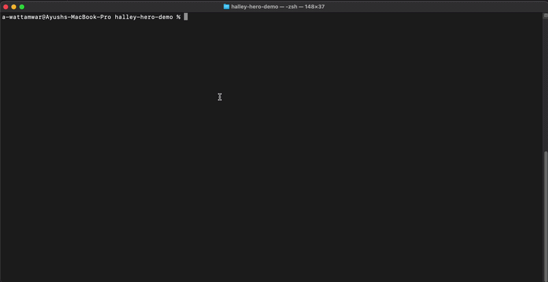

Halley records your production agent runs as bit-fidelity cassettes, turns any run into a permanent regression test with one click, and replays your whole fixture library in CI at zero LLM cost — then bisects to the exact commit that broke it.
Self-hosted. OpenTelemetry-native. Built for the era where your model keeps changing under you.
Live demo link goes live at launch (read-only dashboard with real example-app traces).

halley ci (green) → prompt regression → halley ci (red)
→ halley bisect names the commit. ~15 s, $0, zero live calls.
Record → CI → bisect. The loop that turns a production run into a regression test your CI catches next time.
Every production agent run becomes a cassette — the exact sequence of LLM and tool calls. With the recorder shim, that capture is bit-fidelity: the raw request and response bodies, not a reconstruction.
halley ciPromote any run into a fixture in your repo, then replay your whole fixture library against the current code. When cassettes match, it's deterministic and costs $0 — no live LLM calls.
When a fixture fails, halley bisect binary-searches your recent
commits and points at the exact change — prompt edit, model bump, framework
upgrade — that broke the invariant.
Halley is honest about what it captures, because it changes what you get.
Point any OTLP-emitting instrumentation (OpenLLMetry, OpenInference, OTEL
GenAI semconv, Vercel AI SDK) at the ingester. You get the full dashboard —
runs, spans, timing, token counts, cost — plus automatic invariant
inference. Bodies are reconstructed from gen_ai.* span events,
so they're great for observability and inferring invariants, but they are
not byte-faithful and cannot drive bit-exact replay on
their own.
Add the Halley recorder shim and Halley captures the full raw
request/response JSON. Now hash(live request) == recorded match_key
by construction, so halley ci replays the exact recorded
responses at $0 and halley bisect can
binary-search commits deterministically. This is the hero loop in the demo
above.
Both tiers write the same fixture format. Tier 1 gives you observability and invariant inference at zero instrumentation cost; Tier 2 adds the deterministic $0 CI replay.
Self-host the whole stack with one command.
Full docs, quickstarts, and the dashboard-plus-runner model are in the GitHub repo.